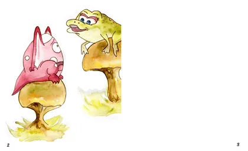
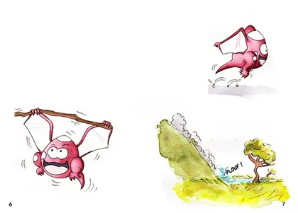
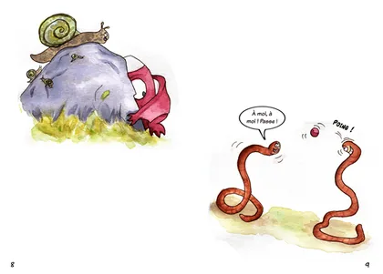
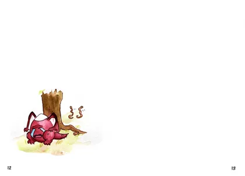

6 images · Touchez une image pour l’agrandir.










Les créations de Namea · Anne
Découvrez Hictic, un dinosaure minuscule qui aimerait avoir un ami. Six doubles-pages illustrées de l’histoire Hictic et Trafe, par Namea.
6 images · Touchez une image pour l’agrandir.



